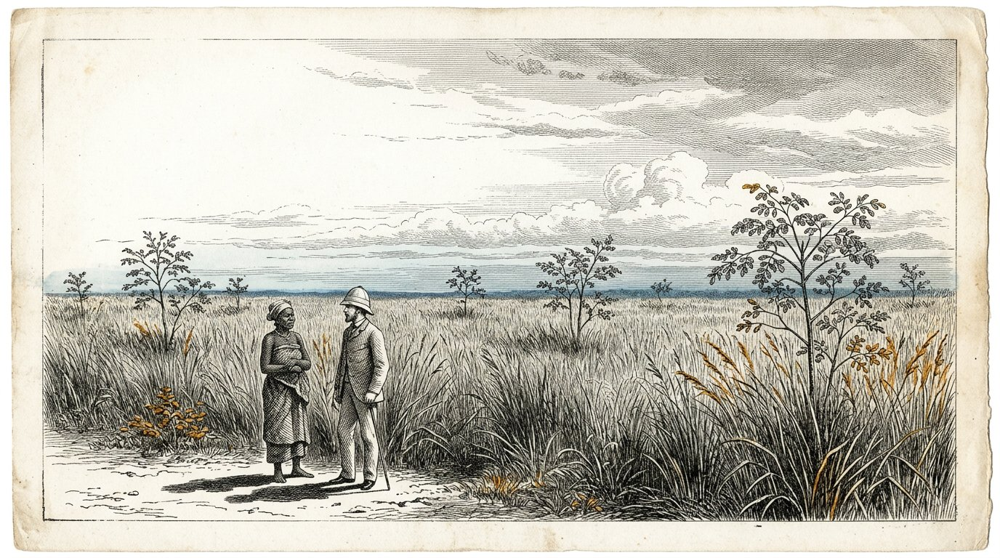

Prologue
La lettre qui devançait le voyageur
Prologue — prononcé par Kosus
Je suis Kosus. Lorsque vous ouvrirez ce cinquième livre, treize ans se seront écoulés depuis ma mort, et Petros aura désormais si souvent tenu entre ses mains le manuscrit qu’Alkion lui a donné que la reliure de cuir qui l’entoure en sera devenue souple. Ce n’est plus mon livre. C’est le livre de Petros. Je ne prononce le prologue que parce que l’usage l’exige et parce que je veux dire une chose avant que vous ne commenciez.
Le Livre Quatre portait sur un liquide. Le Livre Cinq porte sur la relation entre deux personnes qui veulent fabriquer ensemble ce liquide dans un lieu où il n’a encore jamais été produit. C’est une autre question. Qui fabrique un liquide a besoin de technique. Qui bâtit une relation a besoin de la balance de Timaris. La première peut s’apprendre. La seconde peut être gâchée.
Petros quitta le village portuaire avec une caisse, une bouteille et le manuscrit. Avant de partir, il écrivit une lettre. La lettre partit sur le navire qui appareilla trois semaines avant lui. Sur la lettre figurait le nom de Yara, ainsi que l’adresse d’un village situé sur l’équateur, où Alkion et Demira s’étaient rendus des années auparavant. La lettre disait : je suis Petros, l’élève de Kosus, le successeur d’Alkion. Je ne viens pas prendre. Je viens vous demander si vous m’autorisez à apprendre auprès de vous et à vous montrer ce que j’ai appris.
La lettre arriva trois semaines avant Petros. Yara la lut. Elle la lut deux fois. Puis elle la déposa dans un tiroir et ne dit rien à personne. Ce qui se trouve dans le tiroir remontera à la surface dans ce livre lorsque l’heure sera venue.
Qui lit ce livre n’apprend pas à exporter un liquide. Qui lit ce livre apprend à bâtir ensemble un système sans qu’à la fin l’une des deux parties pense avoir perdu. C’est une chose moins importante à apprendre qu’il n’y paraît. Et c’est une chose plus grande à faire que tout le monde ne le dit.
Je cède la parole à Petros. À partir d’ici, c’est lui.
Kosus dit :une lettre qui devance le voyageur est la première fibre de la balance que l’on suspend entre deux personnes. Qui arrive sans lettre doit se hâter. Qui laisse la lettre arriver avant lui arrive à son propre rythme.
Préface
Par Jacobus van Merksteijn
Ceci est le Livre Cinq de Kosaris. Il fait suite au Livre Quatre, dans lequel le liquide extrait de l’herbe est apparu et le village s’est tenu chaud durant un hiver sans gaz. À la fin du Livre Quatre, Alkion a transmis l’écrit de Kosus à Petros, et Anthea a refermé le livre en promettant que le premier élève de Petros écrirait à son tour le Livre Six.
Petros prend donc la mer dans ce livre. Il se rend à l’équateur, où, plus jeune, il avait déjà voyagé pendant quatre ans. Il arrive dans un village où vit Yara, que vous connaissez depuis le Livre Un Partie X comme la femme à la robe rouge. Elle n’est plus la même qu’alors — elle a vieilli, et la coopérative qu’elle a fondée avec ses anciens est devenue quelque chose sur quoi trois pays voisins ont les yeux rivés.
J’ai écrit ce livre après trois rencontres avec Petros au cours des dernières années et après avoir lu les lettres qu’il a adressées à Alkion et Anthea. Les lettres elles-mêmes sont restées en la possession d’Anthea. Ce que vous lisez est mon résumé de ce qu’il m’a raconté et de ce que les lettres m’ont permis de comprendre.
Je tiens à nommer une chose. Le Livre Cinq ne parle ni d’aide au développement ni d’exportation d’énergie. Il parle de ce que signifie, pour un homme du Nord, d’arriver dans le Sud sans emporter avec soi les présupposés du siècle dernier. C’est plus difficile qu’il n’y paraît. Petros le sait, et le livre montre ce qui se passe lorsqu’il essaie malgré tout. Il échoue sur certains points. Yara l’aide à retrouver sa voie. Sur d’autres, il lui apprend quelque chose qu’elle ne savait pas encore. C’est la balance qui pèse ce livre.
Qui lit ce livre en pensant qu’il parle de l’Afrique ne le lit pas correctement. Il parle de la manière dont deux êtres humains issus de deux continents apprennent à bâtir ensemble quelque chose qu’aucun des deux n’aurait pu construire seul. C’est exactement ce que veulent dire les quatre piliers lorsqu’ils sont mis par écrit.
Malte, août 2027.
Partie 1
L’ARRIVÉE DE PETROS

Où Petros arrive à l’équateur, où Yara l’accueille sans lui tendre la main, et où la première semaine est consacrée à écouter plutôt qu’à parler.
Le port sous le soleil

Petros descendit du bateau sur une jetée où, à sept heures du matin, le soleil était déjà plus haut qu’il ne l’aurait été à Malte à minuit, s’il y avait été présent. Sa caisse se trouvait à côté de lui. Son sac de cuir pendait à son épaule. La bouteille d’hydrolysat était enveloppée dans ses chemises, au fond du sac.
Un garçon se tenait sur la jetée et connaissait son nom. Le garçon dit : vous êtes Petros. Je suis Baraka. Yara m’a envoyé. Venez.
Petros dit : je n’ai ni cheval ni charrette. Baraka dit : c’est bien. Il y a une voiture. Petros dit : vous avez une voiture ? Baraka dit : le village a une voiture. Aujourd’hui, je peux la conduire parce que je viens vous chercher.
Ils descendirent la jetée jusqu’à une vieille Toyota jaune, attachée avec une corde à l’endroit où la portière manquait. Baraka chargea la caisse dans le coffre. Il dit : est-elle lourde ? Petros dit : elle contient une presse et un livre. La presse n’est pas grande, mais elle est lourde. Baraka dit : alors elle est lourde.
Ils roulèrent une heure vers l’intérieur des terres. La route était rouge et cahoteuse, et Petros sentait la caisse glisser derrière lui à chaque bosse. Baraka conduisait lentement et sans hâte. Il dit : avez-vous faim ? Petros dit : pas encore. Baraka dit : tant mieux, car nous ne mangerons qu’à l’arrivée.
Ils dépassèrent des manguiers, un troupeau de chèvres et trois femmes portant des ballots sur la tête. Baraka les salua sans s’arrêter. Petros dit : ici, tout le monde se salue. Baraka dit : ce n’est pas tout le monde. Ce sont Fatou, Aminata et Mariam. Elles passent par ici chaque matin. Si quelqu’un que je ne connais pas venait à passer, je ne le saluerais pas. C’est différent.
Petros dit : je crois que j’ai beaucoup à apprendre sur qui est qui ici. Baraka dit : ce n’est pas difficile. Vous devez écouter les noms. Quand quelqu’un a un nom, vous savez que les autres le connaissent. Quand quelqu’un passe sans nom, vous savez qu’il n’est pas d’ici. C’est tout.
Ils arrivèrent à un village formé d’une longue rangée de maisons basses, avec un grand manguier au milieu d’un espace ouvert. Sous le manguier, une femme vêtue de rouge était assise sur une chaise. Elle était plus âgée que Petros ne se l’était imaginé. Elle se leva lorsqu’elle vit la voiture. Elle s’avança vers elle. Elle ne lui tendit pas la main.
Elle dit : bienvenue, Petros, disciple de Kosus. Asseyez-vous d’abord. Nous parlerons ce soir. Aujourd’hui, vous écoutez. Petros hocha la tête. Il dit : merci, Yara. Il s’assit sur le banc sous le manguier. Baraka lui apporta de l’eau. Et Petros écouta tout l’après-midi les bruits du village sans dire un mot.
Kosus dit :celui qui arrive dans un pays étranger et parle le premier jour parle de lui-même. Celui qui écoute le premier jour parle des autres le deuxième jour. Seul celui qui parle des autres est entendu le troisième jour.
La première soirée sous les étoiles

Yara revint à la fin de l’après-midi. Elle dit : venez avec moi. Nous allons manger. Elle conduisit Petros jusqu’à une longue table en bois dressée sous un toit de feuilles séchées. Douze personnes étaient déjà à table : Baraka, trois hommes âgés, quatre femmes de l’âge de Yara et quatre enfants âgés de sept à treize ans.
Yara dit : voici Petros. Il vient de très loin. Il connaît Alkion et Demira. Il était ici il y a dix ans, mais vous ne vous en souvenez probablement plus, car il a alors voyagé quatre ans dans tous les villages de la côte sans rester nulle part plus d’un mois.
Le plus âgé des hommes à table dit : vous n’êtes pas resté assez longtemps au même endroit pour être connu quelque part. C’est souvent le cas des gens du Nord. Petros dit : je le sais, et cette fois, je veux faire autrement. Je veux rester ici aussi longtemps que nécessaire, et pas moins.
Yara dit : combien de temps est nécessaire ? Petros dit : je ne le sais pas. Je l’apprendrai de vous. Yara dit : c’est une bonne réponse. Souvenez-vous de l’avoir donnée. Lorsque, dans trois mois, vous deviendrez impatient, je vous la rappellerai.
Ils mangèrent. Le repas se composait de riz, de poulet et d’une sauce verte que Petros ne connaissait pas. Il demanda ce que c’était. Une des femmes dit : c’est du Moringa. Petros dit : je le connais. Nous le pressons avec l’herbe. La femme dit : vous le pressez ? Petros dit : ses feuilles, avec le Juncao. Cela clarifie le liquide.
La femme dit : nous le mangeons. Nous le séchons, le broyons et l’ajoutons à la sauce. Nous ne le pressons pas. Petros dit : c’est peut-être mieux ainsi. Je n’avais jamais songé que l’on pouvait aussi manger le Moringa. Je l’ai toujours considéré comme un auxiliaire.
Yara dit : c’est la première chose que vous apprenez de nous. Ce que vous appelez un auxiliaire est pour nous une culture. Ce que vous appelez une culture est pour nous un médicament. Lorsque vous pressez le Moringa, vous gaspillez quelque chose. Lorsque vous le mangez, vous devenez plus fort. Si nous devons travailler ensemble, nous devons d’abord nous mettre d’accord sur ce que nous mangeons et ce que nous pressons. Sinon, vous gâcherez notre cuisine et nous offenserez sans le savoir.
Petros hocha la tête. Il dit : je le noterai. Yara dit : écrivez-le tout à l’heure. Pour l’instant, mangez. Ils mangèrent. Les étoiles apparurent au-dessus du toit de feuilles. Petros sentit qu’il était plus loin de chez lui qu’il ne l’avait jamais été, et en même temps, il eut le sentiment d’être exactement à sa place.
Kosus dit :celui qui, dans un pays étranger, reconnaît un auxiliaire qui y est une culture doit savoir qu’il n’est pas arrivé chez un fournisseur. Il est arrivé dans une cuisine. N’offensez pas la cuisine, ou vous ne mangerez plus jamais avec nous.
La lettre dans le tiroir

Le deuxième soir, Yara conduisit Petros chez elle. C’était une longue maison basse, avec une véranda. Dans la véranda se trouvait un bureau. Sur le bureau, il y avait un tiroir. Dans le tiroir, des papiers.
Yara ouvrit le tiroir. Elle en sortit une lettre. Elle dit : vous l’avez écrite trois semaines avant votre arrivée. Je l’ai lue deux fois. Je l’ai mise dans ce tiroir. Je n’ai dit à personne que je l’avais reçue.
Petros dit : pourquoi pas ? Yara dit : parce que je voulais voir si vous arriveriez comme la lettre le promettait. Dans la lettre, vous écriviez que vous ne veniez pas prendre. Vous écriviez que vous veniez demander. Pendant trois semaines, j’ai observé la manière dont vous arriveriez. Aujourd’hui, je vous ai vu arriver. Vous n’êtes pas venu prendre. Vous êtes venu demander. Maintenant, la lettre peut sortir du tiroir.
Petros dit : et si j’étais arrivé autrement ? Yara dit : alors la lettre serait restée dans le tiroir. Et demain, je vous aurais dit que vous étiez le bienvenu dans un village voisin, où vit mon beau-frère. Il est poli et hospitalier, et il vous aurait hébergé trois semaines sans que vous appreniez quoi que ce soit chez nous. Vous seriez alors reparti avec des histoires, et non avec des connaissances.
Petros dit : comment saviez-vous que je serais différent ? Yara dit : je ne le savais pas. Je l’espérais. Votre lettre était écrite autrement que les lettres que je reçois des autres gens du Nord. Elles commencent toujours par ce qu’ils viennent apporter. Vous, vous avez commencé par ce que vous veniez demander. C’était un bon signe. Mais les signes peuvent mentir. C’est pourquoi la lettre a attendu trois semaines.
Petros demanda : que m’avez-vous répondu ? Yara dit : rien. Je ne réponds pas aux lettres de gens que je ne connais pas. Je réponds aux gens qui arrivent. C’est différent. Le papier ment facilement. Les gens mentent aussi, mais je peux voir quand ils le font.
Petros hocha la tête. Il dit : alors la lettre dans le tiroir est maintenant un commencement. Yara dit : non, c’est une fin. Ce que nous ferons à partir de demain, vous n’aurez plus besoin de l’écrire. Nous parlerons. Nous bâtirons. Et lorsque vous rentrerez chez vous, vous écrirez à Alkion ce qui a été bâti, non ce qui a été dit. C’est ainsi qu’il faut faire.
Petros déplia la lettre. Il reconnut son écriture, vieille de trois mois. Il éprouva quelque chose d’étrange : la lettre ne lui appartenait plus. Elle appartenait à Yara. Pendant trois semaines, elle avait porté ces mots sans qu’il le sache. À présent, elle les lui rendait, non comme une réponse, mais comme une clé.
Kosus dit :une lettre que vous envoyez devant vous ne vous appartient plus dès qu’elle arrive. Elle est portée par celui qui la lit et rendue à l’heure que choisit le lecteur. Celui qui écrit le sait. Celui qui écrit sans le savoir ne s’écrit qu’à lui-même.
Partie II
Partie 2
L’HERBE DE YARA

Où Petros découvre que l’herbe est cultivée ici depuis quinze ans déjà, que les anciens en savent plus que lui, et que la presse qu’il a apportée soulève la question de ce qu’ils laissent de côté.
Le champ qui était déjà là

Le troisième matin, Yara emmena Petros au champ derrière le village. C’était du Juncao à hauteur d’homme, à perte de vue. Entre chaque rangée de Juncao se dressaient des Moringa espacés d’environ trois mètres.
Petros s’arrêta à la lisière du champ. Il demanda : depuis combien de temps est-ce là ? Yara répondit : cette parcelle, depuis quinze ans. Celle de l’autre côté de la rivière, depuis douze ans. Celle près du village voisin, depuis neuf ans. Au total, nous avons environ six cents hectares dans notre district.
Petros demanda : qui vous a appris cela ? Yara répondit : ma mère m’a appris à planter. Elle le tenait d’un ingénieur chinois venu travailler ici dans les années quatre-vingt et qui lui avait donné le Juncao. Elle avait alors dix-huit ans et j’en avais trois. J’ai planté les Moringa entre les rangées dix ans plus tard, après une conversation avec un vieux cultivateur qui m’a expliqué que le Moringa protège les racines.
Petros demanda : donc, ce n’est pas nous qui avons inventé cela. Yara répondit : non. Votre Alkion ne l’a pas inventé. Votre Kosus ne l’a pas inventé. Je ne l’ai pas inventé. Personne ne l’a inventé. L’herbe était là avant que nous découvrions ce que nous pouvions en faire.
Petros demanda : et la presse ? Yara répondit : nous ne faisons pas cela. Nous coupons l’herbe et nous la donnons à nos animaux. Nous faisons sécher les feuilles et nous les brûlons dans nos poêles. Nous mangeons le Moringa. Nous faisons des racines de Juncao un médicament contre la fièvre. Nous ne pressons pas parce que nous n’avons jamais vu de presse assez petite pour tenir ici sous le manguier sans qu’il faille bâtir une usine autour.
Petros dit : j’en ai une avec moi. Dans la caisse. Yara répondit : je le sais. Baraka en a senti le poids. Il m’a dit qu’il y avait quelque chose de lourd à l’intérieur, qui n’était ni un livre ni une bouteille. J’ai deviné. Je veux voir la presse cet après-midi.
Petros demanda : et si elle fonctionne ? Qu’est-ce que cela signifie pour vous ? Yara répondit : je ne le sais pas. Je veux d’abord regarder. Si elle fonctionne, nous parlerons ensuite. Si elle ne fonctionne pas, nous n’aurons pas eu besoin de parler. Parler prend du temps et faire des promesses en prend davantage. Nous faisons l’inverse.
Petros réfléchit. Il dit : c’est l’ordre inverse de celui qu’on m’a enseigné chez moi. Yara répondit : je sais. Chez vous, on signe d’abord un contrat et on regarde ensuite si cela fonctionne. Chez nous, on regarde d’abord et on se met d’accord ensuite. Les deux sont possibles. Nous faisons à notre manière parce que nous vivons ici et que vous êtes en visite.
Kosus dit :qui arrive avec une presse en pensant apporter quelque chose doit d’abord apprendre que la culture est déjà en place et que les gens mangent déjà. La presse ajoute quelque chose qui n’existait pas. Elle ne remplace pas ce qui existait. Qui confond les deux perd les gens avant même d’avoir installé la presse.
La démonstration sous le manguier

Cet après-midi-là, ils installèrent la presse sous le manguier. Baraka transporta les pièces sorties de la caisse. Les anciens, trois femmes et sept enfants formaient un demi-cercle autour d’elle.
Petros montra comment couper. Baraka rapporta du champ une botte de Juncao et une poignée de feuilles de Moringa. Petros montra comment superposer les couches : herbe, feuille, herbe, feuille. Il serra la vis. Tout le monde regarda.
Rien ne sortit. Petros serra davantage. Toujours rien. Il serra de toutes ses forces. Une goutte sortit. Puis deux. Puis plus rien.
Petros devint rouge. Il pensa : j’ai fait cela vingt fois à Malte et six fois dans le village portuaire. Pourquoi cela ne fonctionne-t-il pas ici ?
Yara ne dit rien. Elle regarda le champ, puis la presse. Elle demanda : quel âge avait l’herbe que vous pressiez chez vous ? Petros répondit : trois mois après la dernière coupe. Yara demanda : et celle-ci ? Elle désigna la botte sur la presse. Petros répondit : je ne sais pas. Baraka ?
Baraka répondit : cette herbe a neuf mois. Nous n’avons pas fauché ce champ depuis janvier parce que nous l’avons laissé pousser pour la semence. Nous ne faucherons que la semaine prochaine.
Yara dit : votre presse est donc destinée à une herbe plus jeune que celle qui se trouvait ici aujourd’hui. Lorsque nous faucherons la semaine prochaine, nous essaierons de nouveau. Aujourd’hui, nous avons appris que votre presse est plus précise que l’organisation de votre accueil ici. Ce n’est ni votre faute ni la nôtre.
Petros lâcha la presse. Il dit : j’aurais dû le demander. Yara répondit : oui. Nous aurions aussi pu vous le dire. Nous ne l’avons pas fait parce que je voulais vous voir travailler. Je voulais savoir si vous reconnaîtriez votre erreur si cela tournait mal. Vous l’avez reconnue. C’était plus important que de savoir si cela fonctionnait.
Petros dit : c’était un test. Yara répondit : ce n’était pas un test. C’est ainsi que nous découvrons qui vous êtes. Si vous vous étiez emporté contre la presse, contre Baraka ou contre moi, nous aurions commandé une voiture pour vous conduire au port demain matin. Vous ne vous êtes pas emporté. Vous êtes resté face à l’erreur. C’est Aletheris. Nous vous sommes reconnaissants de nous l’avoir montré.
L’un des anciens, à la lisière, dit : maintenant, nous savons que nous pouvons parler avec vous. La semaine prochaine, nous presserons ensemble de l’herbe jeune. Si quelque chose en sort, nous aurons matière à discussion. Si rien n’en sort, vous resterez malgré tout un mois de plus. Vous savez désormais compter jusqu’à cent dans notre langue.
Petros rit. C’était la première fois depuis son arrivée. Il dit : je ne sais pas encore. Mais je vais l’apprendre.
Kosus dit :une démonstration qui échoue devant des gens que vous ne connaissez pas encore est le chemin le plus court vers l’honnêteté réciproque. Qui cherche à montrer son honnêteté dans une démonstration réussie ne va pas plus loin que l’impression produite. Qui reconnaît son erreur dans une démonstration ratée a équilibré la balance avant même qu’une transaction ait lieu.
L’herbe jeune

Une semaine plus tard, ils fauchèrent une partie du champ voisin. L’herbe qu’ils rapportèrent était vert clair, douce au toucher, et son odeur était plus sucrée que celle de l’herbe ancienne de la semaine précédente.
Ils installèrent de nouveau la presse sous le manguier. Le même demi-cercle l’entourait, les mêmes enfants, les mêmes anciens. Baraka disposa les couches.
Petros serra la vis. Cette fois, au bout de dix minutes, un mince filet apparut. Ambré, limpide, étincelant. En vingt minutes, il remplit la moitié d’une bouteille. Yara regarda. Elle ne dit rien.
À la fin du pressage, Petros demanda : voulez-vous goûter ? Yara répondit : goûter quoi ? Petros dit : sur la langue. Elle refusa. Elle dit : je ne goûte que ce que nous avons fabriqué ensemble et qui nous appartient. Ceci est encore à vous. Je goûterai tout à l’heure.
Petros demanda : et la flamme ? Yara répondit : c’est pour les enfants. Elle prit une petite coupelle en terre cuite et la donna à une fille de huit ans qui se tenait à côté d’elle. Elle dit : verses-y une cuillerée. La fille s’exécuta. Yara prit une allumette et la lui tendit. Elle dit : allume.
La fille alluma. Une flamme bleue apparut, avec un cœur jaune doré. Les enfants reculèrent. Puis ils regardèrent de nouveau.
Yara dit : voilà ce que vous avez apporté. Merci de l’avoir montré aux enfants plutôt qu’à moi. Petros demanda : pourquoi est-ce important ? Yara répondit : parce que les enfants s’en souviendront toute leur vie, alors que nous n’avons encore pris aucune décision. Si vous m’aviez d’abord montré la flamme, c’est moi qui aurais dû décider. Maintenant, les enfants sont sept témoins qui ne vous doivent rien, mais qui se souviendront de tout. C’est mieux pour vous et mieux pour nous.
Petros hocha la tête. Il dit : je n’y avais pas pensé. Yara répondit : je le sais. Je veux vous poser une question. Combien de litres pouvez-vous tirer de cette presse par jour ? Petros calcula. Il répondit : dix litres si quatre adultes nous aident. Yara demanda : et quelle quantité d’herbe cela exige-t-il ? Petros répondit : environ deux cents kilos par jour. Yara demanda : et ces deux cents kilos, comment vont-ils du champ à la presse ? Petros n’en savait rien. Yara dit : c’est donc la prochaine chose que nous devons déterminer. Une presse sans chaîne pour l’alimenter n’est qu’un morceau de bois. Une presse avec une chaîne est un système. Nous bâtissons un système.
Kosus dit :une presse est un morceau de bois. Une chaîne de personnes qui alimentent la presse et apprennent d’elle est un système. Qui vend une presse vend du bois. Qui bâtit un système partage quelque chose qui demeure après la mort de la première presse.
Partie III
Partie 3
LA PRESSE SOUS LE MANGUIER

Où Petros et Yara construisent ensemble une seconde presse en bois local, où les femmes apprennent tout ce que l’on peut faire avec le liquide, et où le village possède pour la première fois quelque chose qui est un noyau et non une chaîne.
Le bois du pays voisin

Yara conduisit Petros chez le menuisier du village. Il s’appelait Abdoulaye. Il était âgé, et ses mains étaient de celles qui ne tremblent plus, bien qu’il eût quatre-vingts ans.
Yara dit : Abdoulaye, nous voulons construire encore une presse. Cette fois avec notre propre bois. Ainsi, lorsque Petros retournera dans le Nord, nous aurons quatre presses et non une seule qui partira avec lui.
Abdoulaye examina la presse de Petros. Il tâta le bois. Il dit : c’est du chêne d’un pays froid. Nous n’avons pas de chêne. Nous avons du palissandre et du bois de manguier. Petros dit : lequel des deux pouvez-vous recommander ? Abdoulaye dit : le palissandre est plus solide et ne se fend pas. Le manguier est plus léger, mais moins durable. Pour une presse qui doit durer quinze ans, le palissandre est préférable.
Petros dit : pouvez-vous reproduire la presse en palissandre ? Abdoulaye dit : je peux la reproduire. Je peux l’améliorer. Votre presse a une vis fixée dans un seul écrou. J’en ajouterais un second, parce que l’un des deux s’use. Votre presse n’a pas de brides de serrage sur les côtés. J’en ajouterais, afin que l’herbe soit serrée uniformément. Votre presse n’a pas de gouttière en bas. Je poserais une gouttière en bois qui conduirait le liquide jusqu’à la bouteille sans qu’il goutte. Votre presse perd ainsi un litre par jour. Cela représente trois pour cent. En quinze ans, c’est quatre mois de production.
Petros écouta. Il dit : c’est ce que je veux apprendre de vous. Pouvez-vous m’aider à ajouter ces améliorations à ma presse afin que je puisse les introduire chez moi ? Abdoulaye dit : oui. Nous construirons deux presses ensemble. Je vous apprendrai à fabriquer la mienne et je vous montrerai où la vôtre peut être améliorée. Vous m’apprendrez ce qu’est le liquide lui-même. Si nous faisons cela pendant trois semaines, nous aurons quatre presses : mes deux nouvelles presses, la vôtre améliorée, et le savoir dans quatre têtes.
Yara dit : et je vous paierai ce que vous demandez sur la caisse commune. Abdoulaye dit : je ne vous demande rien. Vous êtes ma sœur. De Petros, je demande qu’il apprenne à Baraka et à Aminata à fabriquer et à conserver le liquide, et qu’au terme de trois semaines il reparte chez lui sans presse, en laissant la sienne ici. Petros regarda Abdoulaye. Il regarda Yara. Il dit : c’est un bon prix.
Yara hocha la tête. Elle dit : maintenant, nous construisons un système.
Kosus dit :un artisan qui nomme les défauts de votre presse sans vous offenser est l’artisan qu’il vous faut. Trouvez-le. Payez-le en savoir et pas seulement en monnaie. Le savoir le garde à vos côtés. La monnaie ne fait de lui que votre fournisseur.
Les femmes qui voulaient la flamme

Pendant ce temps, Abdoulaye et Petros travaillaient aux presses lorsque, le quatrième jour, trois femmes vinrent trouver Yara. Elles s’appelaient Aminata, Fatou et Aissatou. Chacune portait une petite boîte de charbon.
Aminata dit : Yara, nous avons entendu que le liquide brûle sans fumée. Nous voulons savoir s’il peut aussi servir à cuisiner. Notre charbon devient cher, et le bois que nous ramassons nous coûte deux heures de marche par jour. Si le liquide peut cuire les aliments, nous gagnerons du temps. Yara fit venir Petros. Elle dit : pouvez-vous répondre à cela ?
Petros dit : il peut servir à cuisiner. Dans notre village, nous en avons fait un petit réchaud qui en brûle un demi-litre par jour et permet à une famille de préparer trois repas. Aminata dit : et le brûleur ? Petros dit : c’est Wilm, notre forgeron, qui l’a conçu. Je n’ai pas de brûleur avec moi. Mais j’ai les dessins.
Fatou dit : nous avons un forgeron. Il s’appelle Ibrahim. Peut-il le reproduire ? Petros dit : laissez-moi lui parler demain matin. S’il sait lire les dessins, alors oui.
Le lendemain matin, Petros, Yara et les trois femmes allèrent voir Ibrahim. Il était plus jeune que Petros ne l’avait imaginé, environ trente ans. Il examina les dessins. Il dit : cela ressemble à une lampe que je connais. Je peux la fabriquer. Pour ces femmes du village ? Aminata dit : d’abord pour nous trois. Si cela fonctionne, pour les autres.
Ibrahim dit : donnez-moi trois semaines et trois kilos de cuivre. Aminata dit : nous avons le cuivre. Nous faisons fondre de vieilles conduites provenant d’une ancienne mission française qui n’est plus utilisée.
Petros regarda Yara. Yara dit : vous le voyez ? Petros dit : oui. Je le vois. Yara dit : que voyez-vous ? Petros dit : je vois que vous avez un système qui fonctionne sans moi. Le brûleur sera fabriqué par Ibrahim. Le cuivre vient de la mission. La demande vient des trois femmes. Le liquide, c’est moi qui l’apporte. Seulement ce dernier élément dépend encore de moi. Si vous apprenez à le fabriquer, je ne serai plus nécessaire.
Yara dit : c’est exactement ce que nous sommes en train de faire. Et cela ne doit pas vous chagriner. Vous pourrez alors aller à l’endroit suivant sans que nous dépendions de vous. Lorsque vous êtes lié à quelqu’un qui a besoin de vous, vous ne pouvez jamais partir. Lorsque vous avez libéré quelqu’un de sa dépendance à votre égard, vous devenez vous-même libre.
Petros resta longtemps silencieux. Puis il dit : c’est exactement ce que Kosus m’a aussi enseigné. Je l’entends maintenant pour la deuxième fois, d’une autre bouche, et cela me paraît plus juste que la première fois.
Kosus dit :lorsque vous libérez quelqu’un de sa dépendance à votre égard, vous devenez vous-même libre. Lorsque vous liez quelqu’un à vous, vous perdez la liberté d’aller encore ailleurs. Le chemin le plus court vers votre propre liberté passe par la liberté de celui que vous aidez.
La lettre à Alkion

À la fin de son premier mois, Petros écrivit pour la première fois une lettre à Alkion. Il écrivit à la lumière d’une lampe qui brûlait avec son propre liquide. Il écrivit sur du papier que Yara lui avait donné. La lettre était courte.
Alkion, je suis ici depuis un mois. Jusqu’à présent, je n’ai rien appris de nouveau sur l’hydrolysat. Mais j’ai appris trois choses sur la manière de travailler avec des gens qui savent depuis vingt ans plus longtemps que vous et qui n’ont pas besoin de vous. Je les énumère.
Premièrement. N’arrivez pas avec une solution. Arrivez avec une presse, un carnet et une bouteille. Laissez les gens regarder. Laissez-les poser des questions. Ne répondez qu’à ce qui est demandé, et non à ce que vous auriez voulu raconter.
Deuxièmement. Ne faites pas votre première démonstration à la perfection. Lorsqu’elle échoue et que vous reconnaissez votre erreur, vous gagnez plus vite la confiance que lorsque vous montrez quelque chose de parfait dont ils ne peuvent évaluer la manière dont vous l’avez réalisé. La perfection suscite la méfiance dans le Sud.
Troisièmement. Entre-temps, construisez quelque chose qui fonctionne sans vous. Chaque appareil que vous apportez doit pouvoir être reproduit localement. Chaque savoir que vous transmettez doit être porté localement. Le jour où vous partez, tout ce qui est en place doit pouvoir rester en place sans vous.
Je découvre chaque semaine que Yara a trois longueurs d’avance sur moi. Je pensais être venu apporter quelque chose ici. Je découvre que je suis venu y apprendre quelque chose. Je pense que Kosus l’a su dès le début et qu’il ne l’a jamais écrit explicitement, ni à moi ni à Alkion, ni à vous ni à Anthea, ni à qui que ce soit, parce qu’il savait que nous devions le découvrir par nous-mêmes.
Je reste ici pour le moment. Baraka écrira le Livre Six, je pense, mais je ne veux pas encore le lui dire, parce qu’il a douze ans et que ce serait une charge trop lourde. J’attendrai qu’il ait seize ans. Alors je lui donnerai le carnet.
Saluez Demira et Anthea. Dites à Anthea que j’ai emporté son Livre Quatre et que Yara en a lu le prologue et a dit : cet homme savait ce qu’il faisait. C’est le plus grand éloge qui puisse sortir de sa bouche.
Votre élève, Petros.
Il plia la lettre. Il la glissa dans une enveloppe. Le lendemain matin, il la remit à un commerçant qui se rendait au port et qui promit de la déposer sur un bateau à destination de l’Europe. Six semaines plus tard, la lettre parvint à Alkion. Elle la lut. Elle sourit. Elle dit à Demira : il est arrivé. Et il est arrivé à lui-même en même temps. C’est la meilleure sorte d’arrivée qu’un être humain puisse accomplir.
Kosus dit :une lettre qui vient de loin et qui est sincère transforme davantage le lecteur que cent conversations avec ceux qui sont proches. Celui qui a un élève loin de chez lui doit conserver ses lettres. Elles racontent ensemble ce que l’élève apprend en dix ans. Sans les lettres, nous perdons ces dix années.
Partie IV
Partie 4
L'HOMME DE LA CAPITALE

Où un fonctionnaire de la capitale entend parler de la coopérative et vient poser des questions polies qui ne le sont pas, et où Yara montre à Petros comment accueillir de tels hommes sans leur donner ce qu'ils viennent chercher.
La jeep qui soulevait la poussière

Au cours du deuxième mois du séjour de Petros, une jeep grise entra un après-midi dans le village. Un homme en costume clair en descendit. Il était vêtu avec soin et ses chaussures étaient remarquablement propres pour quelqu'un qui venait de parcourir une route de terre rouge.
Il demanda Yara. Baraka lui indiqua le manguier. L'homme s'y dirigea. Yara était assise sur sa chaise. Elle ne se leva pas. Elle dit : bienvenue. Asseyez-vous.
L'homme s'assit. Il se présenta comme Monsieur Diallo, conseiller au ministère de l'Industrie dans la capitale. Il dit : Madame Yara, nous avons reçu de bons échos au sujet de votre coopérative. Nous aimerions voir si nous pouvons vous être utiles.
Yara dit : de quelle manière ? Diallo dit : nous avons un programme destiné à développer les initiatives locales. Lorsqu'une coopérative atteint une certaine dimension, elle peut prétendre à un partenariat avec l'un de nos investisseurs internationaux. Nous pouvons vous aider à franchir cette étape.
Yara dit : nous n'avons pas prévu de franchir cette étape. Diallo dit : je le comprends. Mais l'occasion se présente maintenant. Un groupe de Dubaï s'intéresse aux biocarburants et est disposé à investir des sommes substantielles.
Yara dit : et que voudrait-il ? Diallo dit : une participation majoritaire. En échange de capitaux et d'un accès aux marchés. Vous continueriez à collaborer en tant que partenaire local.
Yara dit : nous n'avons pas de participation majoritaire à céder. Nous ne sommes pas une entreprise. Nous sommes un village qui fait quelque chose ensemble. Il n'y a rien à céder à qui que ce soit.
Diallo sourit poliment. Il dit : Madame, nous pouvons arranger cela. Nous pouvons vous aider à constituer une entité juridique qui le permettra. Ce n'est qu'un petit travail administratif.
Yara dit : et lorsque l'entité aura été constituée et la participation majoritaire vendue, qu'adviendra-t-il du village ? Diallo dit : le village restera. Vous aurez des revenus. Vous bénéficierez d'une assistance technique. Vous deviendrez partie d'un ensemble plus vaste.
Yara dit : et les décisions ? Diallo dit : elles seront prises par les propriétaires, comme dans toute entreprise. Mais vous aurez toujours voix au chapitre.
Yara resta longtemps silencieuse. Puis elle dit : cela fait trente ans que je prends les décisions concernant ce champ et cette herbe. Demandez à ma mère, qui a pris les décisions avant moi pendant quinze ans. C'est elle qui a décidé de l'emplacement des rangées. Moi, j'ai décidé ce qui pousserait entre elles, le Moringa. Ma fille décidera de ce qui viendra après trente ans de Moringa. Si je vous cède notre majorité, ma fille cède sa décision à quelqu'un d'autre.
Diallo dit : ce n'est pas ainsi que les choses se passeront, Madame. Yara dit : c'est exactement ainsi qu'elles se passeront. Je sais comment fonctionnent ces contrats. Mon village voisin en a signé un pour le coton. À présent, ses habitants cultivent ce que les propriétaires leur disent de cultiver. Ils ne sont pas plus pauvres, mais ils ne sont plus un village. Ils sont une usine sans murs.
Diallo resta poli. Il dit : c'est un choix, Madame. Je le respecte. Je voulais seulement vous signaler cette possibilité.
Yara dit : merci de me l'avoir signalée. Je sais maintenant qu'elle existe et que vous la proposez aussi à d'autres villages. Je parlerai aux autres anciens de notre région. Nous saurons ensemble quoi faire lorsque vous passerez ailleurs.
Diallo comprit que l'entretien était terminé. Il se leva. Il dit : Madame, puis-je encore vous demander l'hospitalité pour passer la nuit ici ? La route du retour est longue. Yara dit : vous le pouvez. Baraka vous conduira à la maison d'hôtes.
Diallo s'éloigna. Petros, qui était resté tout le temps assis au sol dans l'ombre sans rien dire, regarda Yara. Yara dit : pourquoi êtes-vous resté silencieux ? Petros dit : parce que vous vous en êtes beaucoup mieux tirée que je ne l'aurais fait.
Kosus dit :un homme en costume propre qui demande votre participation majoritaire ne vient pas pour votre bien. Il vient chercher votre signature. Celui qui reste courtois et garde la maîtrise du rythme de l'entretien le laisse repartir sans signature et sans ennemi. Celui qui se met en colère ne gagne rien et perd la courtoisie de son village.
La lettre rouge

Trois semaines après la visite de Diallo, une lettre arriva de la capitale. Elle était rédigée sur du papier à en-tête officiel et contenue dans une enveloppe rouge. Yara l'ouvrit sur la véranda, en présence de Petros et de Baraka.
La lettre venait d'un directeur du ministère de l'Agriculture. Il écrivait : Madame Yara, nous avons été informés que des activités industrielles non enregistrées se déroulent dans votre village. Nous vous prions de vous présenter à notre bureau dans les trente jours afin d'enregistrer vos activités et de demander les autorisations requises.
Petros dit : c'est la même lettre que celle que j'ai reçue à Bruxelles. Yara dit : non. C'est une autre lettre. Elle est plus incisive. À Bruxelles, ils voulaient vous mettre à l'épreuve. Ici, ils veulent vous broyer. Diallo a signalé que nous ne coopérions pas. À présent, ils essaient par une autre porte.
Petros dit : qu'allez-vous faire ? Yara dit : ce qui doit être fait. Je vais dans la capitale, mais pas seule. J'emmène trois anciens, et je ne vous emmène pas. Vous êtes un homme du Nord, et votre présence leur fournirait des arguments qu'ils n'auraient pas autrement.
Petros dit : quels arguments ? Yara dit : que nous avons un opérateur étranger. Que vous profitez de notre travail. Que vous nous exploitez. Ils pourraient dire tout cela, et trois journaux de la capitale reprendraient l'histoire. Si j'y vais sans vous, ils n'auront rien à publier.
Petros dit : et que leur direz-vous ? Yara dit : que nous avons une pratique locale. Que cette herbe pousse ici depuis quinze ans. Que le pressage est une activité villageoise, non une industrie, et qu'il ne nécessite pas d'autorisation. S'ils insistent, nous dirons que nous sommes disposés à demander l'autorisation correspondant à une activité villageoise. Nous demanderons la plus petite autorisation qui existe. Ils espèrent nous contraindre à prendre la plus grande. Nous les éviterons en choisissant volontairement la plus petite.
Petros réfléchit. Il dit : c'est exactement ce que nous avons fait à Bruxelles. Nous avons demandé à ne pas être homologués et accepté de ne pas pouvoir nous développer. Cela nous a permis de rester sous les radars.
Yara dit : cela aura été un bon exercice pour vous. Je pense que cela fonctionnera ici aussi. Il y a une différence. À Bruxelles, la haie d'épines est ancienne et pousse lentement. Ici, elle est jeune et plus acérée. Elle a été plantée par des gens qui savent qu'ils n'ont pas encore tout l'argent. Elle mord plus profondément.
Petros dit : alors, pourquoi ne dois-je pas vous accompagner ? Yara dit : parce que lorsqu'ils mordront plus profondément, je veux parler par-dessus leurs épaules aux responsables assis derrière eux et au peuple qui se tient derrière ces responsables. Une telle conversation, je la mène dans ma propre langue, avec les miens. Votre présence m'en empêcherait.
Petros hocha la tête. Il dit : compris. Je reste ici et je continue avec Abdoulaye sur la deuxième presse. Yara dit : oui. Et quand je reviendrai, nous aurons une presse de plus et un problème de moins. C'est le bon ordre.
Kosus dit :on ne résiste pas à l'attaque d'une grande puissance par une puissance plus grande encore. On y résiste en demandant à être placé dans la plus petite catégorie et en l'acceptant. L'attaquant voulait vous placer dans la plus grande catégorie parce que c'est là que se trouvent ses crochets. Dans la plus petite, il n'y a pas de crochets. Ils n'y sont pas nécessaires.
Ce que Yara rapporta de la capitale

Yara fut absente pendant dix jours. Petros travailla avec Abdoulaye. Ils avaient achevé la deuxième presse lorsqu'elle revint. Elle le vit dans la véranda en descendant de la jeep. Elle sourit. Elle dit : elle est plus belle que la vôtre.
Petros dit : c'est l'apprenti d'Abdoulaye qui a fabriqué les écrous latéraux. Yara dit : alors elle est belle parce que trois personnes l'ont construite. Venez, j'ai quelque chose à vous raconter.
Ils s'assirent à la table. Yara dit : ils nous ont accordé une autorisation en tant que « coopérative villageoise de transformation végétale traditionnelle ». C'est la plus petite catégorie dont ils disposent. Il y en a deux cent quarante dans le pays. Ils nous ont inscrits sous le numéro cent quatre-vingt-cinq. Nous ne sommes plus exceptionnels.
Petros dit : c'est la meilleure catégorie. Yara dit : c'est la meilleure catégorie. Et j'ai rapporté autre chose. Elle sortit un morceau de papier de son panier. Elle dit : voici une liste de quatre autres coopératives villageoises qui s'occupent de transformation végétale. Je les ai rencontrées dans la salle d'attente du ministère. Nous avons parlé pendant que nous attendions. Elles ont toutes le même problème que nous : des hommes en costume propre viennent les voir et elles reçoivent des lettres dans des enveloppes rouges.
Petros dit : et ensuite ? Yara dit : nous avons convenu de nous retrouver dans trois mois. Dans un village au bord du fleuve, où vit l'une d'entre elles. Nous emmènerons chacune deux anciens. Nous parlerons de ce que nous faisons et de ce qui leur est proposé. Nous déciderons ensemble de ce que nous ferons lorsque la prochaine lettre arrivera.
Petros dit : c'est un réseau. Yara dit : c'est le début d'un réseau. Les réseaux ne se construisent pas dans les salles de réunion. Ils se construisent dans les salles d'attente. Nous n'aurions pas eu de salle d'attente si la lettre n'était pas arrivée. À présent, nous avons une salle d'attente et une liste.
Petros dit : c'est contourner la haie d'épines en utilisant l'attaquant lui-même. Yara dit : c'est exactement cela. Lorsque vous êtes contraint de vous rendre dans un endroit où vous ne vouliez pas aller, regardez qui d'autre doit y être. Vos semblables s'y trouvent. Sans cette lettre, vous ne les auriez jamais rencontrés. La lettre était votre invitation à rejoindre votre propre camp.
Petros dit : je vais noter cela. Yara dit : non, je m'en charge moi-même. Dans le carnet que je tiens désormais aussi. J'en ai commencé un il y a deux semaines. Votre arrivée m'y a poussée. J'y ai déjà écrit douze pages.
Petros leva les yeux, surpris. Yara dit : qu'aviez-vous imaginé ? Que seuls les gens du Nord tiennent des carnets ? C'est un malentendu. Nous écrivons aussi. Seulement, nous n'écrivons pas pour les éditeurs. Nous écrivons pour nos petites-filles. C'est un horizon plus lointain.
Kosus dit :celui qu'on place dans une salle d'attente est censé attendre. Celui qui écoute dans une salle d'attente découvre ses semblables. L'attaquant qui vous rassemble dans une salle d'attente ne vous a pas attaqué. Il vous a donné un réseau. Remerciez-le en silence et servez-vous-en.
Partie V
Partie 5
L’ÉLÈVE ET LA MER

Où Baraka devient adulte, où Petros lui transmet le manuscrit au bout de trois ans, où Yara prend congé sans pour autant le laisser partir, et où le Livre Cinq s’achève sur un sixième livre qui commencera ailleurs.
Baraka qui eut seize ans

Baraka eut seize ans un mardi de décembre. Sa mère prépara du riz avec du poulet et une sauce verte. Yara lui donna une chemise neuve. Petros lui donna le manuscrit de Kosus. Il dit : ce n’est pas un cadeau d’anniversaire. C’est une responsabilité. Réfléchissez trois jours avant de l’accepter.
Baraka n’accepta pas le manuscrit. Il dit : je vais réfléchir trois jours. Le quatrième jour, il vint trouver Petros. Il dit : je l’accepte. Petros dit : pourquoi ? Baraka dit : parce que dans cette région, il n’y a personne d’autre pour l’accepter. Si je dis non, il vous reviendra et repartira avec vous vers l’endroit suivant. Je veux que ce que vous et Yara avez construit reste ici. Alors je l’accepte.
Petros dit : c’est une bonne raison. Baraka dit : il y en a encore une autre. Je vous ai vu travailler pendant trois ans. J’ai vu Yara travailler toute ma vie. Quand vous partirez, quelqu’un devra transmettre à Yara ce que vous lui avez appris, et à moi ainsi qu’aux enfants qui viendront après moi ce que Yara vous a appris. C’est une tâche qui vient des deux côtés. Je suis des deux côtés. Je suis d’ici et j’ai appris à vous connaître. Je suis donc le bon choix.
Petros lui donna le manuscrit. Baraka le prit à deux mains. Il dit : puis-je y écrire ? Petros dit : vous devez y écrire. Sinon, ce ne sera plus un manuscrit vivant.
Yara se tenait à côté d’eux. Elle dit à Baraka : et vous n’écrivez pas seulement ce qui arrive. Vous écrivez aussi ce qui est pensé pendant que cela arrive. Sinon, c’est une chronologie et non de la sagesse. Les fonctionnaires peuvent faire une chronologie. C’est à vous d’y ajouter la sagesse. C’est votre travail.
Baraka hocha la tête. Il dit : je vais essayer. Je ferai des erreurs. Petros dit : c’est ce que Kosus m’a dit lorsqu’il me l’a montré pour la première fois. Il a dit : vous ferez des erreurs, et c’est bien. Les erreurs que l’on met par écrit ne sont plus des erreurs. Elles deviennent des leçons pour ceux qui viendront après vous. Seules les erreurs qui ne sont pas écrites restent des erreurs.
Baraka emporta le manuscrit chez lui. Sa mère le vit entrer avec le manuscrit sous le bras. Elle demanda ce que c’était. Baraka dit : c’est un livre de Kosus. Sa mère dit : qui est Kosus ? Baraka dit : c’est un vieil homme d’un pays lointain. Il est mort. Mais son manuscrit est arrivé jusqu’à nous. Elle dit : et pourquoi l’avez-vous ? Baraka dit : parce que Petros me l’a donné et que Yara y a consenti. Elle dit : alors c’est bien. Pose-le sur l’étagère à côté de mon coran. Baraka dit : est-ce permis ? Elle dit : pourquoi cela ne le serait-il pas ? Kosus est un maître et le coran est un maître. Les maîtres se tiennent côte à côte.
Kosus dit :un élève qui atteint seize ans et accepte le manuscrit referme une chaîne de générations. Ce n’est jamais la même chaîne que la précédente. Chaque élève transforme la chaîne par ses propres erreurs et sa propre sagesse. Ce n’est pas un affaiblissement. C’est ce qui maintient la chaîne en vie.
L’adieu qui n’en fut pas un

Le mois qui suivit l’anniversaire de Baraka, Petros commença à faire ses bagages. Pas son pressoir — il resta auprès du deuxième pressoir d’Abdoulaye, du brûleur d’Ibrahim et du foyer d’Aminata. Seulement ses vêtements, son propre manuscrit qu’il avait tenu pendant trois ans, et la première bouteille qu’il avait pressée au village et qu’il conservait en souvenir.
La veille de son départ, il était assis avec Yara sous le manguier. Elle dit : quand reviendrez-vous ? Petros dit : je ne sais pas. Yara dit : c’est la bonne réponse. Je ne vous ferais pas confiance si vous donniez une date.
Ils gardèrent le silence un moment. Petros dit : j’ai une question à vous poser. Yara dit : posez-la. Petros dit : avez-vous besoin de quelque chose de ma part ? Quelque chose que je pourrais vous envoyer quand je serai chez moi ? Yara dit : non. Nous n’avons besoin de rien de votre part. Nous avons tout ce qu’il nous faut. Ce n’est pas parce que vous n’avez rien de précieux. C’est parce que vous nous avez déjà donné quelque chose de précieux pendant trois ans : votre temps et votre honnêteté. C’est suffisant.
Petros dit : et si vous avez besoin de quelque chose à l’avenir ? Yara dit : alors je vous écrirai. Si nous avons besoin de vous, nous saurons vous trouver. Quand nous n’aurons pas besoin de vous, nous vous laisserons en paix. C’est le respect que vous nous avez enseigné en ne demandant pendant trois ans rien dont vous n’aviez pas besoin.
Petros dit : et Baraka ? Yara dit : Baraka vous écrira. Une lettre par an. Le jour de son anniversaire. Ainsi, vous saurez que le manuscrit vit et qu’il y écrit. Si une année aucune lettre n’arrive, c’est que quelque chose ne va pas, et vous reviendrez voir ce qu’il en est.
Petros hocha la tête. Il dit : c’est un bon arrangement. Yara dit : j’en ai encore un autre. Quand vous irez au prochain endroit pour y faire la même chose qu’ici, je veux que vous donniez aux gens de là-bas trois noms. Aminata, Ibrahim et Abdoulaye. Dites-leur : je n’ai pas inventé cela. Je l’ai appris de ces trois personnes. Si jamais vous doutez de la réalité de ce que nous faisons ensemble, vous pourrez leur rendre visite et leur demander si c’est réel.
Petros dit : alors je dirai aussi Yara. Yara dit : non. Ne leur donnez que ces noms. Je suis trop loin. Eux sont plus proches. On leur rendra visite et vous en sortirez fortifié lorsque ces visites vous seront rapportées. Je suis un nom qui grandit par son absence. Eux sont des noms qui grandissent par leur présence. Choisissez ceux qui sont présents.
Petros dit : c’est votre dernière leçon. Yara dit : ce n’est pas la dernière. Je vous apprendrai encore des choses, mais vous ne les comprendrez que lorsque vous les rencontrerez vous-même. C’est ainsi que cela fonctionne. Ce que je vous expliquerais maintenant ne s’installerait pas en vous. Ce que vous découvrirez vous-même restera.
Ils se levèrent. Ils ne se prirent pas dans les bras, car Yara ne prenait personne dans ses bras. Elle posa sa main droite contre sa poitrine et dit : allez en paix. Petros posa sa main droite contre sa poitrine et dit : vivez longtemps. Ce fut leur adieu.
Kosus dit :un adieu qui n’en est pas un est un adieu entre des personnes qui savent qu’elles n’ont pas besoin l’une de l’autre et qui pourtant se manqueront. C’est la meilleure sorte d’adieu. Celui qui peut éprouver le manque de ce dont il n’a pas besoin a appris ce qu’est l’amitié.
La mer qui fit signe en retour

Petros se tenait sur le quai du port où il était arrivé trois ans plus tôt. Baraka l’avait conduit au port dans la même Toyota jaune, avec la même portière manquante, avec la même façon de conduire lentement.
Baraka dit : qu’écrivez-vous dans vos lettres ? Petros dit : j’écris à Alkion que vous avez accepté le manuscrit. J’écris à Anthea que je pense que vous écrirez le Livre Six. J’écris à Demira que j’ai appris davantage que je n’ai donné et que j’en suis reconnaissant.
Baraka dit : puis-je vous poser une question ? Petros dit : posez-la. Baraka dit : lorsque j’écrirai le Livre Six, quel nom devra y figurer ? Le vôtre ou le mien ? Petros dit : le vôtre. Le Livre Six n’est plus à moi. Il est à vous. De même que le Livre Cinq n’était pas à Yara, mais à moi. De même que le Livre Quatre n’était pas à Alkion, mais à Anthea, qui l’a consigné. Chaque écrivain écrit pour l’écrivain suivant, et non pour lui-même.
Baraka dit : et où dois-je l’écrire ? Ici ou ailleurs ? Petros dit : c’est votre décision. J’ai eu Malte, j’ai eu le village portuaire, j’ai eu ce village. Vous avez ce village et les quatre autres villages que Yara a ajoutés à votre liste. Choisissez vous-même quelle partie de votre monde vous transformerez en village. Et voyagez lorsque vous devez voyager, restez lorsque vous devez rester.
Baraka dit : comment savoir lequel des deux choisir ? Petros dit : vous ne le savez pas. Vous en choisissez un et vous apprenez de lui ce qu’est l’autre. C’est la seule manière. Celui qui veut d’abord savoir, puis choisir, ne choisit jamais.
Le bateau siffla pour annoncer le départ. Petros prit Baraka dans ses bras. Il dit : écrivez-moi une fois par an. Nous remplirons ensemble deux manuscrits. Le vôtre ici et le mien chez moi. Ils sont les deux moitiés d’un même dialogue.
Petros monta à bord. Baraka resta sur le quai. Le bateau s’éloigna. Petros se tenait à la rambarde et regardait le quai jusqu’à ce que Baraka ne soit plus qu’un point, puis jusqu’à ce que le quai ne soit plus qu’une ligne, puis jusqu’à ce que la côte ne soit plus qu’une bande bleue, puis jusqu’à ce qu’il ne reste plus que la mer et le ciel.
Dans son sac se trouvait une bouteille. Elle était vide. Il avait voulu la donner à Yara, mais Yara la lui avait rendue en lui donnant cette consigne : gardez cette bouteille et, lorsque vous arriverez dans un nouvel endroit, montrez-la vide. Dites à ceux qui vous accueilleront : voici la bouteille dans laquelle j’ai transporté le premier liquide que j’ai pressé. Elle est vide parce que nous l’avons brûlé, bu et transformé en quelque chose qui demeure. Ce que vous recevez de moi, ce n’est pas la bouteille, mais le voyage de la bouteille. C’est suffisant.
Petros regarda l’horizon. Il pensa : je vais vers le nord. Je ne sais pas encore vers quel nord. Mais j’ai une bouteille vide, un manuscrit vierge et trois noms à prononcer. C’est plus que ce avec quoi je suis arrivé.
Et il pensa : quelque part sur ce continent, dans un village que je ne connais pas encore, Baraka est en train d’écrire sa première page. Il ne sait pas que c’est le Livre Six. Cela viendra plus tard. Pour l’instant, ce n’est qu’une page. Exactement comme Kosus a commencé un jour sa première page. Exactement comme j’ai écrit la mienne, et Alkion la sienne, et Anthea la sienne. La chaîne avance d’un maillon. Et la mer sous moi est la même que Kosus a traversée lui aussi il y a quarante ans, lorsqu’il a atteint Malte. C’est assez pour continuer à vivre. C’est assez pour partir.
Kosus dit :une bouteille vide que vous emportez de votre premier lieu au suivant vaut davantage qu’une bouteille pleine. Les bouteilles pleines se boivent. Les bouteilles vides se montrent. Ce que vous montrez demeure plus longtemps que ce que vous offrez. Et le voyage de la bouteille vide est la preuve que quelque chose a été brûlé, bu et transformé en quelque chose qui demeure.
Le Kosaris — Livre Cinq — Le livre du partenaire.
Consigné par Jacobus van Merksteijn, ingénieur et éditeur, vivant à Malte et à Palma, d’après des entretiens avec Petros et à partir des lettres conservées par Anthea van Merksteijn. Publié sous openvizier.org. Illustrations en lithographie noir et blanc avec des accents bleus, dans la charte graphique de Het Open Vizier.
« Qui bâtit un système au lieu d’établir une chaîne bâtit quelque chose qui demeure après lui. Qui établit une chaîne ne fait qu’assurer son propre approvisionnement. »